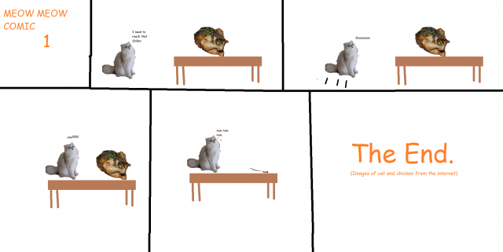

Episode 37: December 1st, 2019
Back to News Archive
| Back to Homepage | Back to Shef Werld<< Previous Episode | >> Next Episode

"Tree Christmas"
$5.00 | ~8 ghost dollars | ⭐25 coins
Does not include potential cost from surprise mechanics (they're not lootboxes so it's not illegal!!!), purchases from Shef Kerbi's Apparel or preordering the Special Edition
-------------------------
APPLE'S TECHNOLOGY AND DESIGN CORNER: Episode 8
When YouTube was told to stop tracking people for ad revenue, they used an Uno reverse card, and the judge asked if that's actually a thing you can do. Then, they were sued by Mattel for using an Uno card in their defense. Here's an excerpt of the legal battle:
Mattel: *uses Skip*
YouTube: What the-
Judge: ...I can't argue with that.
Judge: It's my turn now, but I don't have any cards. Does that mean I won?
Mattel: Yeah. That leaves us and them.
YouTube: That's not h-
Mattel: Ssh! It's not your turn! *uses another*
Mattel: As you can see, they have clearly used our intellectual property! *uses red Wild Draw Four*
Mattel: And they literally can't defend themselves! *uses Draw Two* Uno!
Mattel: *uses Skip* We win!
YouTube: Alright, whatever, you win, just please let us leave.
Mattel: Not just yet! *plays Skunk*
YouTube: Huh!?
Mattel: Haven't you ever heard of Uno Moo?
In other news, Tik Tok had an unexpected downtime earlier today when it fell off the wall, and programming is the last place in which it is still legal to delete your children.
SKELETONS ARE INVADING; MAN IS A COUCH
Recently, several skeletons have been seen invading businesses in Dreem Lend, including SKNN. We are attempting to get rid of them, but we don't know how.
Also, a man was recently turned into a couch in an incident that is definitely unrelated to the machine that turns people into furniture that we have on the third floor.
PAPER FINDS IT'S WAY HOME
That's right folks, our favorite piece of paper, papery the paper, has found its way home. He has been looking for centuries, looking for a way home, and after years of searching, he did. Although, when he found his way home, a paper shredder came along and shredded him to pieces. I'm not entirely sure I'm supposed to share this, heck, I was told that if I DID share this, they would shred me up too. But I don't care, shred me all you want, I probably just earned some money adding that extra information. I say when paper shredders threaten to shred you up, throw those paper shredders in THESE BAD BOYS:

SKNN BOUGHT IN MONOPOLY GAME
Businessman Walfe Slem has recently purchased SKNN in a game of Monopoly on the Text Based GChat. This only happens in the Monopoly universe and not in Dreem Lend’s universe.
NORTH EAST WEST SOUTH
Several members of TBGchat have recently been promoted to admin after showing various pieces of information proving their adminship. The exact role of an admin is unclear for now, but it appears to give you a snazzy colour on the Discord chat. More on this topic coming never, because I'm not revisiting this.
MYSTERIOUS FLOATING OBJECT DISCOVERED IN SKY (GONE SPOOKY)
Tonight, Dreem Lend residents were baffled by a strange phenomenon in the sky. Some kind of white cylindrical object was visible, facing down at the Earth. The Dreem Lend Space Program has promised to check on one of their space cameras "when it happens to orbit a star for long enough for it fly back in our direction, or when aliens send it back on its way." Some witnesses believe that the object is made of cheese.
EPIC FIGHT THING
A few days ago, Apple the Cat was seen battling his evil twin, POLPCAT, on top of the SKNN headquarters. After heroically murdering POLPCAT by pushing him off of the edge, Apple had this to say about the battle: "how did i get up here help"
BREAKING NEWS
The Second TBGF Christmas Tree has just recently spawned into existence. Currently, Keynsun DDDO is carefully watching the tree's every move from a mile away. We recently got an interview with The First TBGF Christmas Tree for their thoughts on the matter:
 : (says nothing because they're a tree)
: (says nothing because they're a tree)
Unfortunately, we had to cut out the interview at this point because they were saying some very bad words and we can't have that on here without having a third party invading the studio.
Link to The Second TBGF Christmas Tree can be found here.

Now I don't wanna give my own opionion but...
OPIONION WITH SHEF KERBI AND BANE STARBUCKLE
SPAGHETTI, SPAGHETTI; SPAGHETTI "SPAGHETTI; SPAGHETTI", SPAGHETTI
So we told you Shef Kerbi News Network fans on our Scratch page that you could post anything with the #SKNN hashtag and you could end up in our paper! In this episode, we'll respond to some of your feedback with the new SKNN format, as well as show some of your cool stuff!
We began this issue's section with
"bane walks in on the current scene holding a bubble tea. she walks back out"
And here were your responses:
Generic Person wrote:
"So my brother Random Person was arrested last week and I don't understand why. Apparently it was for 'unwillingly holding a person captive in our basement' but last time I checked our house doesn't even have a basement. What's up with that?"
I don't know. Could be a misunderstanding from the police. I know that the Dreem Lend police department have been trialing search warrants for potentially violent criminals using VR so they aren't at risk of injury/death. Google's 'house reconstruction' AI probably messed up and thought the house had a basement in it. Happens sometimes.
Flowermanvista wrote:
"??🅱ro could I have the LiT 🔥 F I R E Ｅ 🅱 Ｉ Ｃ uncompReSSed verRSION??"
Original comment
k don't worry my man I'll send you a 32kbps AAC file of that song
Speaking of which, a full version of the song made for SKA was found and released onto the internet:
A copy will be available on SKA on December 2nd.
----------------
COMIX
by Apple the Cat and Carmes
This is not Candy Sadness what

Carmes - The Meow Meow Comic

Carmes draws Fren's Old Comics that Shef Kerbi never bothered to draw

ACTIVITE

WEATHER
uh oh
{kind=link}
THANK YOU FOR WATCH. PLEASE TUN E IN NEXT TIME FOR MORE NESW

Shef Kerbi News Network follows the guidelines and conventions set by the 1984 High Quality News Act of Dreem Lend, which states
that any news published is to be of a high quality, is to remain unbiased and to show all sides of a news report, does not attack anyone, and protects the privacy
of people whose identities don't want to be revealed.
If you would like to file a complaint regarding content use, please message SKNN through our Scratch account. We also have a Twitter and Instagram account if you
prefer.
Shef Kerbi News Network respects the ancestors of Cappy Town, and understands that they are the reason why Dreem Lend exists.
Shef Kerbi News Network is proud to be a subsidiary of Shef Werld
this website is best viewed with Ned's Escape